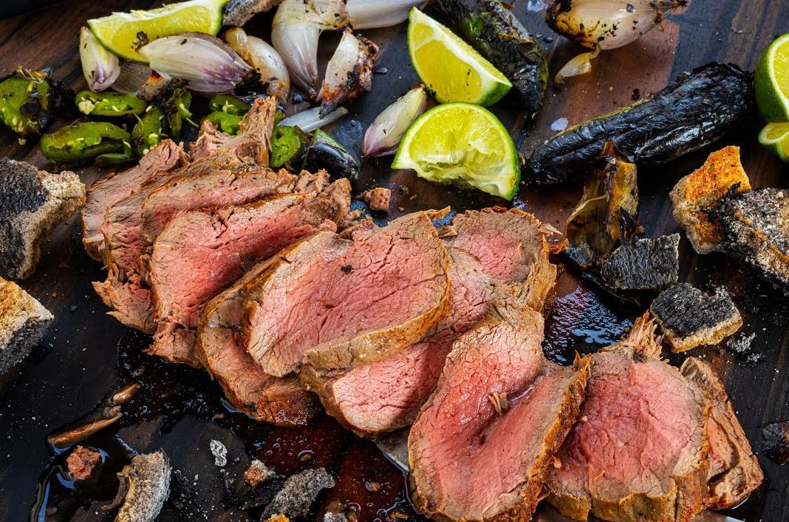

Carne al Trapo
Back to Recipes

Description
Carne al Trapo (Salt-Crusted tenderloin) is a Colombian culinary gem.
This dish features perfectly tender and moist beef with a
deliciously crusty exterior, infused with subtle hints of
wood smoke and a balanced flavor profile.
Pair it with a fresh mixed salad and baked potatoes, and complement
the meal with a red wine of your choice. It's an ideal dish for
enjoying a cozy evening around the fire with friends and family.
Ingredients
- 1 tenderloin (1.5 to 1.7 Kg)
- salt
- water
Materials
- Cotton rag
- Butcher rope (cotton)
- A well lit fireplace or fire pit
- A fire resistant metal tray
Instructions
- Clean the tenderloin by removing excess fat and silver skin.
- Lay out a cotton cloth on a flat surface.
- Place the tenderloin on the cloth and roll it up.
- Ensure that only two layers of cloth cover the meat.
- Trim excess cloth, leaving a 2-inch overlap with three layers.
- Unroll the cloth and dampen it with water, wringing out the excess moisture.
- Spread the cloth, cover slightly more than half with a 1/4-inch layer of salt.
- Roll the loin from the salted side of the cloth to the end.
- Secure the roll with rope at both ends and in the middle.
- Place the rolled loin on a well-lit fire.
- After 10 minutes, turn the roll over.
- Cook for approximately 9 more minutes, then carefully remove from the fire.
- Use a knife and hammer to crack open the hardened cloth and extract the loin.
- Transfer the loin to a cutting board and slice into thick portions.
- Serve and enjoy!
Back to Recipes